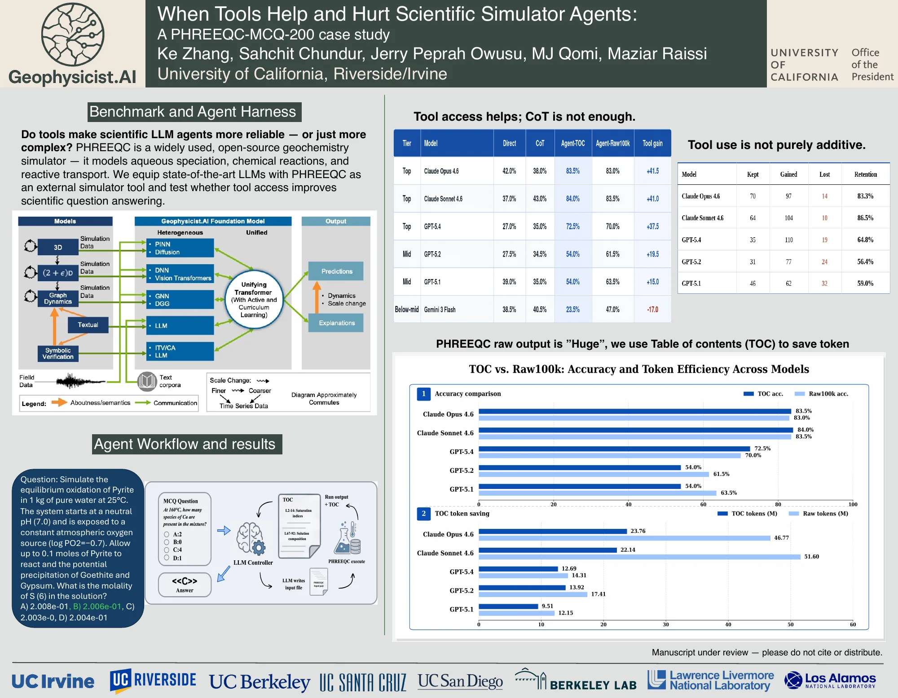

PHREEQC-MCQ-200 is a diagnostic benchmark for tool-augmented agents using a deterministic scientific simulator. Beyond aggregate accuracy, we measure retention—whether tool use preserves answers a model already gets right—and show that overall gains can coexist with item-level regressions. We also compare raw-output access with a metadata-guided TOC interface, finding that the effectiveness of output access depends on model capability.
Paper: arXiv:2607.00436
When Tools Help and Hurt Scientific Simulator Agents: A PHREEQC-MCQ-200 Case Study

Click the poster to open the full-resolution PDF.